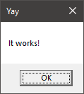
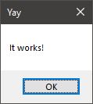

This article explains how to create a Windows program that displays a message box like the following. I call this the Minimal Windows Program™, or Hello Windows.

What the final program will look like.
Such a simple program is ideal because it touches many topics and is useful for creating a foundation of Windows-related knowledge.
The whole program is made out of a single function call. It’ll look something like this:
main :: () {
show message box(...)
}
However, everything around that single call is what makes this worth talking about.
The MessageBox function/macro
Let’s start by looking at the signature of the function itself. You can find it in the docs, but I’ll report it here for convenience.
int MessageBox(
[in, optional] HWND hWnd,
[in, optional] LPCTSTR lpText,
[in, optional] LPCTSTR lpCaption,
[in] UINT uType
);
If you’ve never called a Windows function before, there are a few things that might catch your attention.
- The parameter names are all prefixed with one or two letters. Instead of just
Text, we havelpText. Instead ofType, it’suType. What’s up with that? - The parameters types are different than the ones you are used to. What in the world is a
LPCTSTR? - Some of these parameters are labeled as “optional”, and all of them are labeled as “in”. What does it mean?
But there is an even more mysterious fact: the documentation actually lists not one, but three versions of this function:
- MessageBox
- MessageBoxA
- MessageBoxW
Why? What’s the difference?
Optional arguments
Let’s start from the easy ones. A lot of Windows functions take in optional arguments in the form of zeros. You can pass 0/NULL in place of an argument marked as optional, and it’ll be replaced with a default value.
This means that MessageBox can be called like this:
MessageBox(0, 0, 0, 0);
The first three parameters will be replaced internally with default values.
The in annotation simply means that the argument is meant as an input to the function. In some other cases, you might see an argument labeled as out, which marks it as an argument that the function will write to. One example is GetMessage:
BOOL GetMessage(
[out] LPMSG lpMsg,
[in, optional] HWND hWnd,
[in] UINT wMsgFilterMin,
[in] UINT wMsgFilterMax
);
Some functions even take inout arguments, meant as both input and output.
Hungarian notation
The deal with parameter names is called hungarian notation. It’s the practice of annotating every variable with a prefix that indicates the type of the variable. So an integer variable representing a length will be called nLength, a pointer to a value will be called pValue, and so on.
In this case, we have:
hWnd: A “handle” to a windowlpText: A “long pointer” to some textlpCaption: A “long pointer” to a captionuType: An “unsigned int” type
A big part of the Windows API uses this convention, so you better get used to it.
Windows data types
This can be a big roadblock for someone new to Windows programming. Windows defines custom data types for everything, even for simple integer types.
Most of these types are defined in a header called BaseTsd.h. You can check this documentation page for a list of all the types defined there and their definition.
A quick glance at the list will reveal that most of the types are just alternate names for the builtin C types.
For example, UINT is just an unsigned 32-bit integer. It is equivalend to unsigned int. Why define a new name for an existing type? I don’t know, but Windows loves to do that.
In fact, it loves it so much that there are many names for the same custom type: DWORD, DWORD32, UINT, UINT32, ULONG and ULONG32 are all defined to be unsigned int.
Pay special attention to the DWORD type, as it’s used a lot in windows. It stands for “double-word”, and it’s a residue from the 16-bit processors era. Windows defines BYTE, WORD, DWORD and QWORD (“quadruple-word”) to refer to a specific multiple of the byte:
A HWND is simply a void *. It is one of the many types of “handles” that Windows defines.
Whenever windows creates a resource that should remain opaque, it will return a “handle” to it. The details of how this handle works are unknown, and that’s the point: you’re not supposed to care about how this handle is interpreted, windows will know.
There are many types of handle: HWND (handle to a window), HBRUSH (handle to a brush), HCURSOR (handle to a cursor), and so on.
Finally, LPCTSTR. I left this one for last because it the most complicated to unpack. Starting from the easy parts, “STR” is short for “string”. So this type is a kind of string.
“LP” is an acronym for “Long Pointer”. In this case, it doesn’t mean anything - it’s simply describing how strings are represented in C programs: as pointers to the actual data.
So this is a pointer to a string, or simply a string. If you search in the BaseTsd.h header, you will find a “LPSTR” type, which is just a “char *”
“C” stands for “Constant”. It’s saying that the string in question has the “const” qualifier. The BaseTsd.h header also has a the LPCSTR type, defined as “const char *”
We’re left with the T. To explain this, we’re going to have to take a quick detour into the windows headers. Feel free to follow along.
Into the headers
In Visual Studio, create an new empty C++ solution/project.
In a .cpp file, write the following code:
#include <windows.h>
int main() {
MessageBox();
}
The header windows.h is a wrapper header that contains most of the basic Windows functionality. It includes other headers such as BaseTsd.h (which we saw earlier) and Winuser.h (where MessageBox is defined).
Right-click on MessageBox, then click on ‘View Definition’. It should open a new tab called winuser.h, right to the line where MessageBox is defined.
#ifdef UNICODE
#define MessageBox MessageBoxW
#else
#define MessageBox MessageBoxA
#endif // !UNICODE
As you can see, MessageBox is not actually a function, but rather a macro. It expands to either the A or the W version depending on some UNICODE symbol.
This is a little historical artifact. If you want to know more about the history of this choice, [scroll to the bottom/watch Casey explain it]. What remains of it today is a hack to encourage new programs to use Unicode strings while still remaining backwards-compatible with programs that were written using ASCII strings.
The ‘A’ and ‘W’ suffixes stand, respectively, for ‘ANSI’ and ‘Wide’. They indicate wether the strings that they operate on are narrow or wide:
[Image/diagram explaining the difference between narrow/wide strings] [Caption: How narrow and wide strings are encoded]
If we read the signatures of the two functions and the definitions of the types of their parameters, we can see that they differ exactly on the string type:
MessageBoxA(HWND, LPCSTR, LPCSTR, UINT);
MessageBoxW(HWND, LPCWSTR, LPCWSTR, UINT);
^--------------^
Where:
LPCSTR = const char *
LPCWSTR = const wchar_t *
So if your program is always going to output ANSI strings, you can just go with the A version and pass in regular strings. But how do we define wide strings?
If you’re using C or C++ you can add a L prefix in front of any string literal to tell the compiler to treat it as a wide string:
LPCWSTR message = L"Message text";
^
For other languages, you have to hope that the compiler has a similar feature. In Odin, for example, the L prefix is replaced with a compiler intrinsic that
does the same thing:
message := windows.L("Message text");
^-------^
We’re almost there. So, having said all this, what is the “T” in LPCTSTR?
It’s all part of the same hack. The people at Microsoft decided they wanted developers to be able to switch between narrow and wide strings easily, without having to change every string literal, type and function call. So they defined a “TEXT” macro, which expands to either one of the two string literals depending on the presence of a symbol:
#ifdef UNICODE
#define TEXT(s) L##s
#else
#define TEXT(s) s
#endif // !UNICODE
You use it like this:
LPCTSTR message = TEXT("Message text"); // Expands to L"Message text" if UNICODE is defined, to "Message text" otherwise.
The LPCTSTR type is designed to caputure whatever type comes out of the TEXT macro. The “T”, of course, stands for “TEXT”. I’ll put it here for completeness:
#ifdef UNICODE
typedef LPCWSTR LPCTSTR
#else
typedef LPCSTR LPCTSTR
#endif // !UNICODE
So there you have it. If you always write code using the TEXT macro, and the LPCTSTR type, and the macro wrappers for functions, you’ll be able to switch between narrow and wide strings every time you compile the program.
The program and a few other things
So we figured out how to specify the strings, let’s look at the other two parameters. First we have the owner window. As the documentation says, we can put NULL to mean that there is no owner window. The last parameter is a bitfield which describes the buttons and icons that will appear in the box. If we leave it at 0, that’ll be the same thing as MB_OK, which puts an “OK”-button in the message box.
Let’s put everything together and write the program.
/* C, C++ */
#include <windows.h>
int main(void) {
MessageBoxW(NULL, L"It works!", L"Yay", MB_OK);
}
/* Odin */
package main
import "core:sys/windows"
main :: proc() {
windows.MessageBoxW(nil, windows.L("It works!"), windows.L("Yay"), windows.MB_OK);
}
All that’s left to do is compile and run. If you are compiling C or C++ code from the command line, remember to tell the linker to import the necessary libraries. You can find the import library for every windows function at the bottom of its documentation. For MessageBoxW, it’ll be user32.lib.
cl main.c /nologo /link user32.lib
If you are compiling from a Visual Studio project, the auto-generated command line should already include everything you need.
Congratulations, you have just made your first message box!
Now, of course we aren’t done. If you look carefully, the message box in the picture above doesn’t look exactly like the one at the top of the post. The button is different, this one looks… older, like it’s coming straight out of Windows 98. Shouldn’t it look more modern?
Another problem is that this program is somehow “tied” to the command line running it. If you run the program from the command line, the console become unresponsive. If instead you run it by double-clicking on the icon, a new console opens up. Why?
Let’s tackle the console problem first.
Windows subsystems
There is a special linker flag called “subsystem”. It sets a field in the executable file that tells the windows loader how the program should be run. For normal user-level applications, only two of the listed values are relevant: “console” and “windows”.
The former is the current mode of our program: takes control of an existing console or creates one if it doesn’t exist. It is useful for command-line programs like compilers. The latter is the opposite: no consoles attached. That’s exactly what we need.
Let’s add it to our compilation line:
cl main.c /nologo /link user32.lib /subsystem:windows
Hit compile and…
LIBCMT.lib(exe_winmain.obj) : error LNK2019: unresolved external symbol WinMain in function "int __cdecl __scrt_common_main_seh(void)" (?__scrt_common_main_seh@@YAHXZ)
main.exe : fatal error LNK1120: 1 unresolved externals
Uh oh. Aparently, the linker is looking for a symbol called WinMain, although we never referenced it in the code.
It turns out that when a program is compiled for the “windows” subsystem, the linker by default expects a different entry point. This is its signature:
int __clrcall WinMain(
[in] HINSTANCE hInstance,
[in, optional] HINSTANCE hPrevInstance,
[in] LPSTR lpCmdLine,
[in] int nShowCmd
);
I won’t talk about what all those parameters are, at least not for now. We don’t need them. But notice that they follow the exact same conventions as the ones in MessageBox: hungarian notation, handles, long pointers.
So one thing we could do is actually use this as the entry point, in place of main. But suppose we wanted to keep using main; how can we do it?
There’s another linker flag that can help us: “entry”. As the name suggests, it lets you specify the entry point for a program. But be careful: it expects the real entry point, the one than initializes the global variables and gets the command line arguments, not the one that the programmer is expected to use.
By default, for windows-subsystem programs, this is set to WinMainCRTStarup. What we’re looking for is mainCRTStartup, so let’s specify that:
cl main.c /nologo /link user32.lib /subsystem:windows /entry:mainCRTStartup
We’re back to compiling without errors, but this time the message box doesn’t halt the console!
Visual styles
The Minimal Windows Program™ is almost done. The last things that’s left to do is to make the button use the modern look. Again, this sounds like it’s going to be as simple as setting a boolean, but it’s not. Instead, we want to tell Windows to use the new version of the library that implements the buttons, called ComCtl32.dll.
This choice of version does not happen when compiling or linking the program, but when the program is executed. Windows uses information it finds in the running program to determine what version of the library it should use (this is the idea behind side-by-side assemblies). How do we put this information into the program? The full details are explained here, but the general idea is to create a “manifest file” that will describe the executable. You can either create the manifest file manually, or generate one automatically with a #pragma comment in one of your C or C++ files…
…or you can use undocumented Windows features to avoid using manifest files altogether. We can take the code from this Stack Overflow answer to force Windows to load the new version of the library. The comments under the answer briefly touch on what the code does, and honestly that is just about how far I decided to investigate.
The choice is yours now: either pair up your executable with a manifest describing it, or use this hack. I usually choose the second option.
Anyway, we finally did it! We have a working and good-looking message box.
Final notes
The point of this article is not to say everything there is to know about message boxes. For that, there’s documentation. This is just an overview of all the topics that you might want to know about when writing Windows programs.
If you want to have some fun now that the hard part is done, go read about the possible values you can combine with MB_OK, how to interpret the return value, or spice up your message boxes with a MessageBeep.